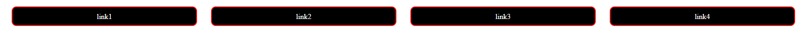
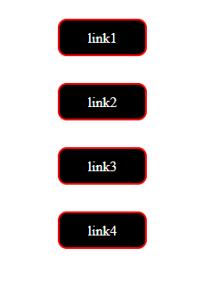
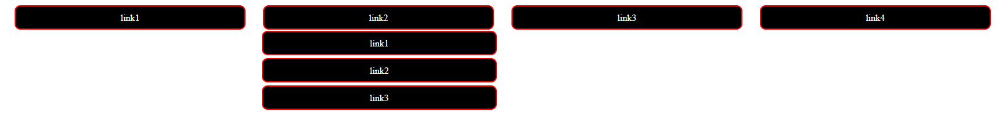

Menu
Menu służą głównie do nawigacji po stronie, ale także do wybierania np produktów na stronach e-commerce. Są na praktycznie każdej stronie Internetowej, dlatego umiejętność tworzenia ich to muss programisty.
Po co nam menu?
Menu używa się jako elementów nawigacji po stronie, tak jak na przykład tej na której jesteś. Tworzy się wiele typów menu, np. menu hamburger (takie jak w wersji mobilnej tej strony) czy menu rozsuwane. W tym artykule skupimy się na menu pionowych, poziomych i tych typu dropdown.
Podział menu
Nie ma dokładnie określonego podziału menu. Jest ich tyle, ile wymyślą designerzy i napiszą programiści. Najpolularniejsze to te do nawigacji, najprostsze pionowe lub poziome menu z linkami do innych podstron witryny, czy kotwicami w przypadku onepagy. Pod tym linkiem znajdziesz 110 rodzaji menu.
Zwykłe menu poziome i pionowe
A więc jak stworzyć takie menu? W tej sekcji znajdziesz na to odpowiedź.
Menu poziome.
Menu to nic innego jak odpowiednio wystylizowana lista odnośników. więc pierwszym krokiem będzie wykonanie listy w html.
<div class="wrapper">
<ul>
<li><a href="#">link1</a></li>
<li><a href="#">link2</a></li>
<li><a href="#">link3</a></li>
<li><a href="#">link4</a></li>
</ul>
</div>
.wrapper {
height: 200px;
width: 90%;
margin: 0 auto;
}
ul {
display: flex;
gap: 30px;
}
li {
margin: 0;
text-align: center;
list-style-type: none;
flex-grow: 1; /* pozwalamy elementowi rosnąć na maksymalną szerokość i wysokość*/
border-radius: 10px; /*zaokrąglamy granice elementu*/
border: 2px solid red;
background: black;
padding-block: 10px; /* zwiększamy przestrzeń między kontentem a granicą */
}
a {
text-decoration: none;
/* pozwalamy elementowi rosnąć na maksymalną szerokość i wysokość*/
flex-grow: 1;
color: white;
}
Otrzymujemy takie menu:
Aby otrzymać menu pionowe, wystrczy dokonać kilku małych zmian w css:
.wrapper {
height: 200px;
width: 90%;
margin: 0 auto;
display: flex; /* aby wycentrować menu w pionie*/
justify-content: center;/* aby wycentrować menu w pionie*/
}
ul {
display: flex;
gap: 30px;
flex-direction: column; /*aby wyświetlić elementy nad sobą*/
width: 100px;
}/*reszta pozostaje bez zmian*/
Otrzymujemy takie menu:
Menu rozsuwane
Aby stworzyć menu rozsuwane musimy umieścić pod nim drugie menu, które pokaże się po najechaniu na pierwsze myszką. A robimy to tak:
<div class="wrapper">
<ul>
<li><a href="#">link1</a></li>
<li><a href="#">link2</a>
<ol>
<li>link1</li>
<li>link2</li>
<li>link3</li>
</ol>
</li>
<li><a href="#">link3</a></li>
<li><a href="#">link4</a></li>
</ul>
</div> .wrapper {
height: 200px;
width: 90%;
margin: 0 auto;
}
ul {
display: flex;
gap: 30px;
}
li {
margin: 0;
text-align: center;
list-style-type: none;
flex-grow: 1; /* pozwalamy elementowi rosnąć na maksymalną szerokość i wysokość*/
border-radius: 10px; /*zaokrąglamy granice elementu*/
border: 2px solid red;
background: black;
padding-block: 10px; /* zwiększamy przestrzeń między kontentem a granicą */
}
a {
text-decoration: none;
/* pozwalamy elementowi rosnąć na maksymalną szerokość i wysokość*/
flex-grow: 1;
color: white;
}
ol{
display: none; /*ustawiamy wyświeltanie się elementu na brak, aby nie było widoczne bez nasuwania myszką*/
position: absolute; /*pozycjonujemy liste względem dokumentu, aby zajdowałą się pod li a nie w nim.*/
top: 60px;
right: 950px;
width: 21%;
}
ol li{
margin-bottom: 5px; /*ustawiamy odstęp między elementami*/
color: white;
}
ol a{
text-decoration: none;
}
ul:hover ol {/* kiedy na elemencie znajduje się myszka ustaw wartość ol na:*/
display: block /*zmieniamy wyświetlanie na blokowe*/
}Otrzymujemy takie menu po najechaniu myszą:
W tym artykule nauczyłeś się robić najprostsze menu!